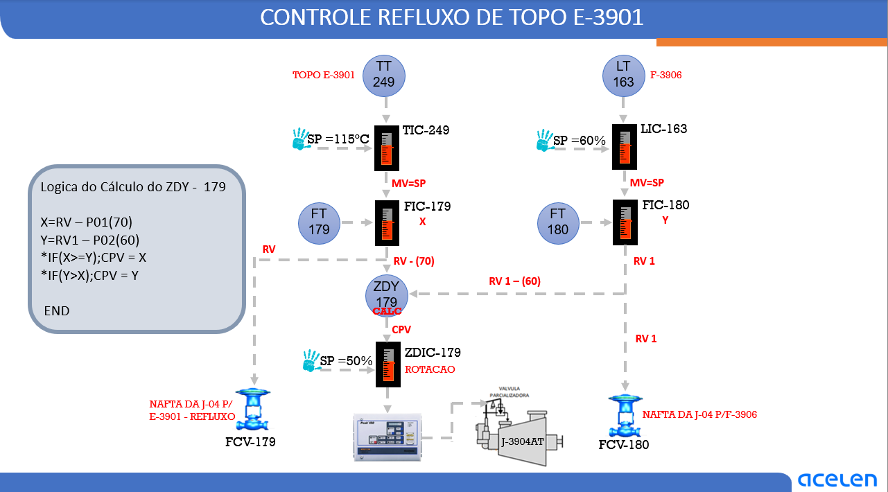

Diagnóstico em tempo real
Monitorando desvios e capacidade hidráulica.
- Aplique uma perturbação e acompanhe a sequência causal.
As interpretações são regras didáticas, não diagnósticos automáticos para o processo real.
Entenda, opere e simule a interação entre as cascatas TIC-249 → FIC-179 e LIC-163 → FIC-180, o seletor ZDY-179 e a regulação de rotação da J-3904AT.
Simulador didático de resposta dinâmica — não conectado ao SDCD e não validado para operação real.
Atue nos setpoints, cargas térmicas, vazões, restrições e condições da bomba. Observe a trajetória dos sinais, as válvulas e a estabilidade do processo.
Clique nas lâmpadas de cada instrumento para abrir a análise técnica.
Compara demandas corrigidas; não soma as duas saídas.
Compare PV, SP, MV e posição física. O comportamento da malha importa mais que um único valor isolado.
| Instrumento | Modo | PV | SP | MV / saída | Condição |
|---|---|---|---|---|---|
| Inicializando simulação... | |||||
Monitorando desvios e capacidade hidráulica.
As interpretações são regras didáticas, não diagnósticos automáticos para o processo real.
Nenhum evento registrado.
Selecione uma hipótese após executar um cenário para conferir o diagnóstico.
Linhas contínuas = variáveis medidas. Linhas tracejadas = setpoints. Unidade das vazões = índice ilustrativo.
Cada cenário modifica variáveis do simulador. Leia a situação antes de clicar para observar os primeiros efeitos.
A missão aplica simultaneamente perturbação térmica e perda de inventário, com rotação manual inicialmente limitada. Recupere a autoridade hidráulica, mantendo as cargas sem alteração, e sustente o controle por 35 segundos simulados.
Inicie a missão para receber uma condição com baixa capacidade hidráulica. A avaliação é ilustrativa e não representa critérios reais de segurança.
Descrição de todas as malhas, função dos instrumentos, lógica de seleção, exemplos de resposta, limitações e diagnóstico do operador.
O sistema mostrado no desenho integra duas cascatas independentes, cuja saída hidráulica é atendida pela mesma máquina, com um bloco lógico de seleção e um regulador associado à rotação. O TIC-249 controla a temperatura de topo da E-3901 e determina a vazão de refluxo via FIC-179. O LIC-163 controla o inventário do F-3906 e determina a segunda vazão via FIC-180. O ZDY-179 recebe sinais dessas malhas, aplica compensações e seleciona a maior demanda corrigida, encaminhando seu CPV ao ZDIC-179.
Os setpoints indicados na figura são 115 °C para o TIC-249, 60% para o LIC-163 e 50% para o ZDIC-179. Os dois primeiros representam explicitamente temperatura e nível; a natureza do SP de 50% do ZDIC demanda confirmação de escala e configuração.
| Instrumento | Função na arquitetura |
|---|---|
| TT-249 / TIC-249 | Medição e controlador mestre da temperatura de topo. |
| FT-179 / FIC-179 / FCV-179 | Medição, controle escravo e válvula de vazão do refluxo para a E-3901. |
| LT-163 / LIC-163 | Medição e controlador mestre de inventário do F-3906. |
| FT-180 / FIC-180 / FCV-180 | Medição, controle escravo e válvula da corrente de nafta que segue para F-3907, retirando inventário do F-3906. |
| ZDY-179 | Bloco de cálculo do máximo entre duas demandas corrigidas. |
| ZDIC-179 / J-3904AT | Coordenação com o acionamento e a capacidade hidráulica da bomba. |
Linhas tracejadas no esquema original representam transmissão de sinais. As interações físicas entre ramais decorrem da hidráulica comum da bomba, mesmo quando os controladores de vazão têm setpoints distintos.
A E-3901 recebe vapores oriundos do sistema de craqueamento. Ao retornar ao topo, a nafta de refluxo encontra o vapor ascendente, promovendo transferência de calor, condensação preferencial de frações menos voláteis, contato líquido–vapor e troca de massa. Esses fenômenos auxiliam a separação entre componentes que devem sair pelo topo e aqueles que devem retornar às regiões inferiores da torre.
O refluxo interfere na temperatura, no perfil de composição e na especificação do ponto final de ebulição (PFE) da nafta. A temperatura é uma medida indireta da qualidade da separação; sua correlação com composição também depende da pressão, da composição da carga e das condições internas.
O TT-249 mede a temperatura real do topo. O TIC-249 compara a PV com seu SP de 115 °C. Sua saída MV, indicada no desenho como SP da etapa inferior, define o setpoint remoto do FIC-179. O FIC-179 compara o setpoint com a vazão efetivamente medida pelo FT-179 e movimenta a FCV-179 para corrigir a diferença. Portanto, o TIC não abre diretamente a válvula: ele solicita vazão, e o FIC executa a correção rápida de vazão.
Se a temperatura estiver abaixo do SP, a demanda esperada é inversa: reduzir refluxo, respeitando os limites de qualidade e hidráulica definidos em procedimentos reais.
A vazão pode variar em segundos pela oscilação da pressão de descarga da bomba, resistência do ramal ou movimentação da válvula, enquanto a temperatura responde à inércia térmica da torre. O FIC atua mais rapidamente sobre essas perturbações e o TIC ajusta mais lentamente a quantidade desejada. A cascata diminui o tempo de exposição do processo à perturbação hidráulica, em comparação com uma atuação direta apenas pela temperatura.
Ressalva: direção real da ação do controlador, escalas e limites precisam ser confirmados no SDCD; o caminho funcional é o mostrado na figura.
O LT-163 mede o nível do F-3906. O LIC-163 compara o nível medido com o SP de 60% e fornece o setpoint remoto de vazão ao FIC-180; o FT-180 mede a vazão e a FCV-180 regula a corrente de nafta.
Como a vazão comandada pela FCV-180 constitui uma retirada de nafta do inventário do F-3906 em direção ao F-3907, ela entra com sinal negativo no balanço do vaso. Logo, o LIC-163 apresenta ação funcional invertida em relação à versão anterior do Concept.
A FCV-179 regula o refluxo para a E-3901; a FCV-180 regula a vazão de nafta enviada ao F-3907. Ambas participam da utilização da capacidade hidráulica da J-3904AT. A alteração de uma demanda pode alterar pressão disponível à outra, mesmo mantendo os respectivos FICs em AUTO. A seleção do ZDY continua sendo o maior valor entre RV−70 e RV1−60, sem inversão matemática.
Atenção: a dinâmica calculada nesta tela foi corrigida para a FCV-180 como saída do F-3906. Ganhos, tempos e vazões permanecem hipotéticos; são necessários P&ID e lógica real do SDCD para validação de engenharia.
O FIC-180 corrige variações hidráulicas rápidas; o LIC-163 responde ao efeito acumulado de massa e varia gradualmente a retirada do vaso. Esta separação de velocidades ajuda a estabilizar o inventário.
O ZDY-179 compara dois sinais do sistema. Na figura, RV deriva do FIC-179 e RV1 do FIC-180. RV/RV1 são nomes de variáveis do cálculo, não necessariamente vazões medidas. Pelo trajeto representado, a interpretação plausível é que sejam demandas dos dois controladores, mas o parâmetro exato deve ser validado no CENTUM.
X = RV - P01(70) Y = RV1 - P02(60) IF (X >= Y) CPV = X IF (Y > X) CPV = Y END
O seletor escolhe o maior valor corrigido, e não necessariamente a maior abertura absoluta. Se RV = 80 e RV1 = 75, então X = 10 e Y = 15; a seleção será Y, associado ao FIC-180. A malha 180 prevalece mesmo exibindo demanda absoluta menor.
A igualdade ocorre quando RV−70 = RV1−60, isto é, RV = RV1+10. Considerando sinais na mesma escala percentual, o ramo 179 precisa superar o 180 em 10 pontos percentuais para atingir a igualdade; na igualdade, a condição X ≥ Y da programação seleciona X. O ramo 180 possui, assim, prioridade relativa de 10 pontos na comparação corrigida.
P01 e P02 podem representar compensações de característica dos ramais, margens relativas de atuação ou filosofia operacional. Não é possível afirmar sua motivação de projeto apenas pelo desenho.
| RV | RV1 | X | Y | CPV / escolhido |
|---|---|---|---|---|
| 80 | 75 | 10 | 15 | 15 / 180 |
| 90 | 60 | 20 | 0 | 20 / 179 |
| 70 | 60 | 0 | 0 | 0 / 179 (empate) |
| 55 | 50 | −15 | −10 | −10 / 180 |
As saídas podem resultar negativas após a subtração. Não há bloqueio de valores negativos apresentado no programa; não se deve introduzir um piso em zero sem verificar a lógica real.
O cálculo CPV = max(X,Y) não adiciona as duas demandas. Ele identifica a condição mais solicitante segundo as referências de comparação. A vazão total efetivamente disponível, porém, continua dependendo da bomba e das restrições dos dois ramais.
O CPV do ZDY chega ao ZDIC-179, indicado como controle de rotação, e deste ao sistema vinculado à válvula parcializadora da J-3904AT. A ideia funcional plausível é adequar a capacidade da bomba à demanda hidráulica mais solicitante, sem impor rotação excessiva quando as válvulas conseguem manter vazão com pressão menor.
A vazão num ramal depende da diferença de pressão disponível, das perdas por atrito e acessórios, da curva da bomba e da restrição da válvula de controle. Se a bomba fornece pressão demasiada, os FICs tendem a estrangular as válvulas; se a bomba não entrega pressão suficiente, as válvulas tendem a abrir, mas podem deixar de atingir os SPs. Uma otimização por demanda de válvulas pode aumentar a eficiência hidráulica e reduzir a perda por estrangulamento, desde que a filosofia real confirme essa função.
Atenção: o desenho não informa se o CPV entra na PV, SP remoto ou outra entrada do ZDIC, tampouco sua direção de ação. O item 5 descreve uma arquitetura funcional plausível, não a configuração comprovada da planta.
Se a J-3904AT for acionada por turbina a vapor e a válvula parcializadora modular admissão de vapor, maior admissão efetiva pode elevar o torque motor. A rotação varia conforme o torque da turbina e o torque resistente da bomba até o novo equilíbrio dinâmico. A máquina não acelera instantaneamente; atuador, regulador, turbina e rotor introduzem dinâmica e limites.
A lógica de capacidade não elimina limites de pressão, vibração, lubrificação, temperatura de mancais, mínima vazão contínua, NPSH disponível, limites de rotação e proteções de turbina e bomba. Aumentar rotação diante de uma limitação de sucção pode piorar a cavitação. Essas restrições devem sempre prevalecer sobre uma solicitação de otimização hidráulica.
O TIC-249 amplia o setpoint do FIC-179; a FCV-179 tende a abrir. RV cresce e pode assumir a seleção no ZDY. Um eventual aumento da capacidade da bomba também afeta a pressão no ramal 180; seu FIC precisa reajustar a FCV-180 para sustentar a vazão, ainda que o LIC-163 mantenha setpoint de nível constante. Isso revela o acoplamento hidráulico entre cascatas.
Como a FCV-180 retira nafta do F-3906 para o F-3907, o LIC-163 reduz o setpoint do FIC-180. A FCV-180 tende a fechar e a vazão enviada ao F-3907 diminui, conservando inventário. RV1 e Y podem cair, transferindo a seleção do ZDY para o FIC-179. O FIC-179 deve compensar a redistribuição hidráulica para preservar o refluxo da torre.
Maior temperatura solicita mais refluxo pelo FIC-179. Nível alto no F-3906 solicita maior retirada para F-3907 pelo FIC-180. O ZDY seleciona o maior dos dois sinais corrigidos, não a soma. Se os ramais juntos exigirem mais vazão do que a máquina suporta, ambos podem apresentar desvios simultâneos.
Se a FCV-179 estiver muito aberta e o FT-179 permanecer abaixo do SP, investigar capacidade de bomba, pressão diferencial, restrição de tubulações, posicionador, instrumento e condições de sucção. Uma condição semelhante no ramal 180 exige diagnóstico do mesmo tipo, distinguindo a direção do balanço de nível.
Quando X e Y estão próximos, pequenas flutuações podem alternar o ramo selecionado. O trecho de programa não mostra histerese. A presença de filtros, tempos mortos ou estratégias anti-oscilação deve ser verificada no SDCD. Alternância excessiva pode induzir movimentações desnecessárias de rotação e interações entre FICs.
Com rotação manual, os FICs ainda podem compensar perturbações enquanto houver abertura e pressão diferencial suficientes. Se um controlador chegar a 100% sem atingir a vazão, a malha perde autoridade hidráulica. A transição de modo real deve obedecer aos procedimentos de controle e segurança da unidade; o laboratório não modela manobras de campo.
| Sintoma | Hipótese a verificar |
|---|---|
| TIC solicita refluxo e FCV-179 abre, mas FT-179 não acompanha | Capacidade hidráulica, pressão diferencial, restrição, falha da válvula ou do instrumento. |
| FCV-179 e FCV-180 abrem ao mesmo tempo | Baixa reserva de pressão/rotação, mudança comum de suprimento ou duas demandas genuínas. |
| Rotação aumenta e válvulas fecham com vazões estáveis | Resposta compensatória normal dos FICs após maior pressão disponível. |
| LIC solicita mais vazão e o FT-180 não acompanha | Capacidade insuficiente ou anomalia no ramal de descarga para F-3907. |
| Temperatura varia, mas FT-179 permanece estável | Composição e carga dos vapores, pressão de topo, temperatura do refluxo, internos da torre. |
| Seleção oscila continuamente entre X e Y | Demanda corrigida próxima, ruído, sintonia inadequada ou ausência de filtragem/histerese. |
| Válvula muito aberta, baixa vazão, possível cavitação | Verificar sucção, NPSH e condição mecânica; acelerar não é solução universal. |
O CIC precisa distinguir perturbação de processo, perturbação hidráulica, erro de instrumento e saturação do elemento final. Mesmo quando o ZDY seleciona corretamente, um limite físico impede que a vazão solicitada seja alcançada.
O refluxo condensa parte dos componentes menos voláteis e melhora o contato líquido-vapor, influenciando a temperatura de topo e o ponto final de ebulição da nafta. Refluxo insuficiente pode reduzir a efetividade da separação, elevar a temperatura e favorecer maior arraste de componentes relativamente pesados no topo. Refluxo excessivo aumenta a carga interna de líquido e pode aproximar a torre de restrições de capacidade hidráulica, conforme o tipo de internos.
Manter o TIC-249 em 115 °C, isoladamente, não garante o PFE da nafta: pressão, natureza dos vapores, temperatura do refluxo, distribuição de líquido e estado dos internos alteram a relação entre temperatura e composição. O desempenho deve ser interpretado junto de tendências e análises de qualidade.
Também há efeitos energéticos e de circulação: maior refluxo pode representar mais vazão de bombeamento e maior carga térmica em serviços associados. A variável manipulada deve permanecer coerente com a estratégia de fracionamento e com as limitações do equipamento.
Em uma cascata, a PV do controlador mestre determina o SP do escravo. Colocar o mestre em manual fixa a solicitação de vazão enviada ao escravo: o FIC ainda pode controlar seu próprio FT, mas a temperatura ou o nível deixam de ajustar automaticamente a vazão requerida. Colocar o escravo em manual impede que a diferença entre FT e SP movimente sua FCV: nesse caso, o mestre pode continuar alterando o SP remoto, porém a vazão deixa de responder em malha fechada.
MV não é posição real: a saída do FIC representa sua demanda. Em uma falha de atuador, posicionador ou haste, a MV poderá aumentar enquanto a válvula permanece congelada. A detecção exige confrontar MV, indicação física independente (quando disponível), FT e pressão diferencial.
Transferência manual/auto: controladores industriais usam mecanismos específicos de tracking, limites, anti-reset-windup e políticas de transferência. O laboratório representa apenas um rastreamento PI simplificado, que pode apresentar transitórios. Não extrapolar a lógica para procedimentos de operação da U-39.
Durante a simulação de travamento, a lógica ZDY continuará recebendo a MV comandada do FIC, por hipótese do modelo. Portanto, pode solicitar mais capacidade à J-3904AT mesmo sem que a FCV altere sua posição real, ilustrando por que o diagnóstico depende de sinais diferentes e não apenas do seletor.
Uma análise de causa e efeito inicia pela primeira variável que mudou, comparando horários e trajetórias: TT-249 ou LT-163, MV do TIC/LIC, SP dos FICs, FT medidos, MV do FIC, posição física da FCV, CPV do ZDY e velocidade do acionamento.
Se a temperatura sobe antes da alteração da vazão, verifique a mudança de carga, pressão e temperatura de refluxo. Se a vazão cai primeiro e a temperatura sobe depois, investigue hidráulica e controle do refluxo. Se FT-179 indica vazão controlada, mas o efeito térmico não acompanha, investigue medição, composição e dinâmica da torre. Se as duas vazões caem simultaneamente após redução de rotação, considere uma causa comum antes de assumir dois defeitos independentes.
Válvula próxima de 100% com FT abaixo do SP indica falta de autoridade de controle, mas não identifica sozinha a causa. Possibilidades incluem restrição no ramal, baixa pressão diferencial, posicionador com problema, medição falsa ou limitação de capacidade. Aumentar rotação diante de cavitação pode agravar a situação.
Seleção: a CPV é sempre o maior valor entre X=RV−P01 e Y=RV1−P02. Para os parâmetros nominais, a igualdade ocorre quando RV=RV1+10. Pequenas flutuações próximas dessa fronteira podem trocar o sinal selecionado. O desenho não comprova a existência de histerese ou filtros.
Por fim, verifique se a correção sustenta temperatura e nível próximos dos SPs, sem saturação persistente das válvulas e respeitando o limite de rotação. As tolerâncias da missão CIC são apenas didáticas.
Uma leitura que conecta controle, transferência de calor, separação, bombas e a instrumentação.
O refluxo retorna como corrente líquida e recebe energia dos vapores em contracorrente. O equilíbrio líquido–vapor e a transferência de componentes entre fases determinam o perfil térmico e composicional. A temperatura de topo é indicador indireto da qualidade, não um analisador de composição.
A FCV-180 controla uma saída de nafta do F-3906 para o F-3907. Logo, mais vazão pela FCV-180 reduz o inventário do F-3906, se as demais entradas e saídas permanecerem constantes. O nível resulta da diferença entre entradas e saídas, integrada ao longo do tempo. Um controle de nível demasiado agressivo pode provocar mudanças de vazão que perturbem outros equipamentos; por isso, deve ser analisado com sua dinâmica de inventário.
O ponto de operação corresponde à interseção da curva da bomba com a curva equivalente dos ramais. Mudanças na rotação deslocam a curva de bombeamento. As válvulas reajustam resistências locais e redistribuem vazões entre os consumidores.
Redução do NPSH disponível, aumento de perdas na sucção ou elevação do NPSH requerido podem provocar cavitação. Abertura elevada da FCV acompanhada de vazão insuficiente exige distinguir falta de pressão de outros defeitos; o aumento de rotação não é medida universal.
Há uma inconsistência aparente se todos os sinais forem percentuais de 0 a 100 e a CPV for comparada diretamente com o SP=50% do ZDIC: RV−70 chega no máximo a 30; RV1−60 chega no máximo a 40. Logo CPV≤40 e não atingiria 50 na mesma escala. Isso pode indicar escalonamento diferente, tratamento adicional ou interpretação incompleta do bloco. O simulador usa o valor bruto CPV para a seleção e uma conversão didática separada para explorar o efeito de velocidade, sem afirmar que esta é a lógica configurada na U-39.
Questões com alternativas tecnicamente próximas, explicações após responder e ordem reembaralhada a cada tentativa. Utilize as tendências do laboratório para testar hipóteses.
Imagem original fornecida para esta análise. A indicação de destino da FCV-180 está incorreta no desenho recebido: o destino confirmado pelo operador é F-3907, não F-3906. A figura permanece intacta para rastreabilidade.

ERRATA DE PROCESSO — V2.1: FCV-180 envia nafta da J-3904 para F-3907. A legenda “p/ F-3906” no esquema de origem foi identificada como incorreta. As descrições, sentido da cascata de nível e sinal no balanço de massa do simulador foram corrigidos. Os demais valores explícitos do desenho foram preservados. O modelo dinâmico é exclusivamente didático.